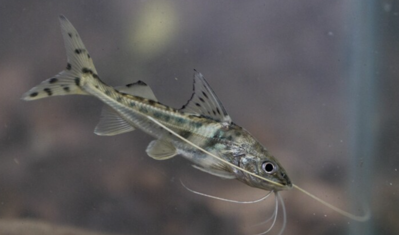

Systématique
- Ordre : Siluriformes
- Famille : Pimelodidae
- Genre : Pimelodus
- Espèce : P. pictus
- Syn. : Pimelodella pictus
- Groupe : Silures

Pimelodus pictus est un poisson-chat d'Amérique du Sud très populaire pour sa robe argentée ornée de points noirs ("polka dots") et ses barbillons maxillaires exceptionnellement longs, qui s'étendent souvent jusqu'à la nageoire caudale.
C'est une espèce de taille moyenne, atteignant environ 11 à 12 cm en aquarium (jusqu'à 15 cm dans la nature). Contrairement à beaucoup de silures benthiques statiques, le P. pictus est un nageur actif qui parcourt inlassablement l'aquarium.
Attention : les premiers rayons de ses nageoires pectorales et dorsale sont des épines dures et dentelées. Elles peuvent infliger des piqûres douloureuses et se coincent irrémédiablement dans les épuisettes classiques (il est recommandé de les attraper avec un récipient rigide).
C'est un poisson grégaire qui doit être maintenu en groupe (minimum 4 à 6 individus). S'il est maintenu seul, il devient timide, stressé ou parfois agressif.
Bien que pacifique avec les poissons de taille moyenne (Scalaires, Geophagus), c'est un prédateur nocturne opportuniste. Il considérera tout poisson capable d'entrer dans sa bouche (néons, guppys, petites crevettes) comme de la nourriture. Il est très actif, y compris le jour lors des nourrissages, mais préfère une lumière tamisée.
Mode : ovipare.
La reproduction n'est pas maîtrisée en aquarium amateur. Les rares succès sont anecdotiques ou obtenus par stimulation hormonale dans des élevages professionnels.
Dimorphisme sexuel : Pratiquement inexistant à l'œil nu. Les femelles matures sont supposées être légèrement plus rebondies au niveau de l'abdomen que les mâles.
Espérance de vie : Environ 8 à 10 ans en captivité.
Il est originaire des bassins de l'Amazone et de l'Orénoque (Colombie, Pérou, Brésil). Il fréquente les zones de courant dans les rivières à fond sablonneux ou boueux.
Répartition

Origine naturelle :
- Colombie (bassin du Rio Magdalena).
- Pérou (bassin de l'Amazone).
- Brésil.
- Venezuela (bassin de l'Orénoque).
Paramètres de maintenance
Température : 22 à 26 °C.
pH : 6,0 à 7,5.
GH : 5 à 15 °dGH.
Courant : Modéré, apprécie une eau bien oxygénée.
Volume conseillé : Bien que de taille moyenne, c'est un nageur très actif qui a besoin d'espace. Un bac de 250 à 300 L minimum avec une façade d'au moins 120 cm est requis pour un petit groupe.
Régime alimentaire
Régime : omnivore à tendance carnivore.
Dans la nature, il se nourrit d'insectes, de larves et de petits poissons.
En aquarium, il est vorace : il accepte les granulés coulants, mais doit recevoir régulièrement de la nourriture vivante ou congelée (vers de vase, krill, morceaux de moule, poisson) pour rester en bonne santé.